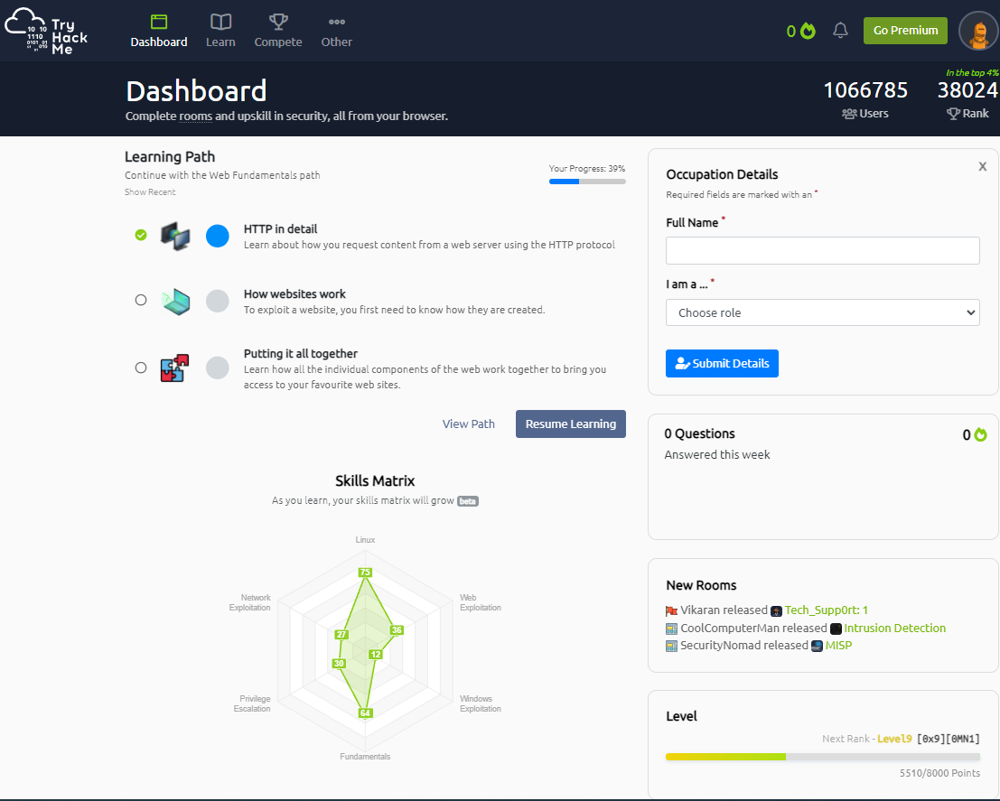
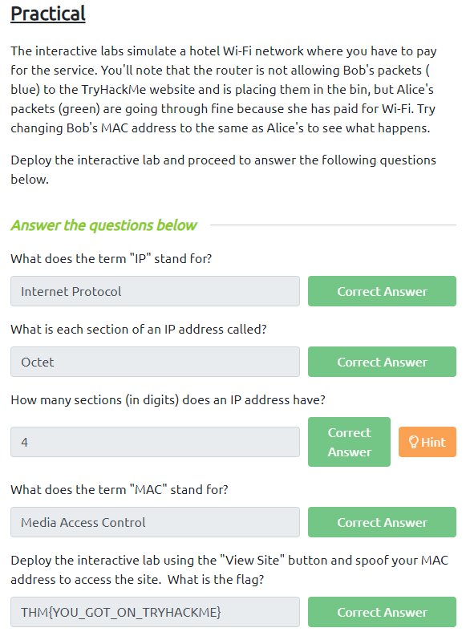
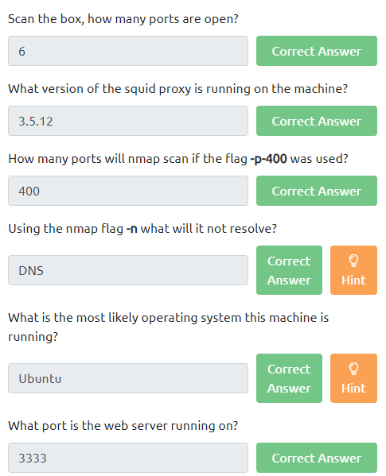
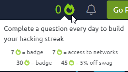
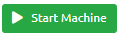
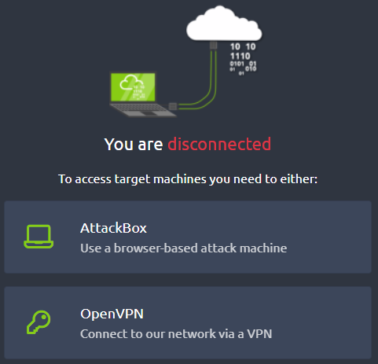
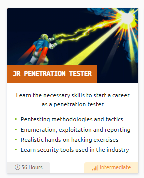
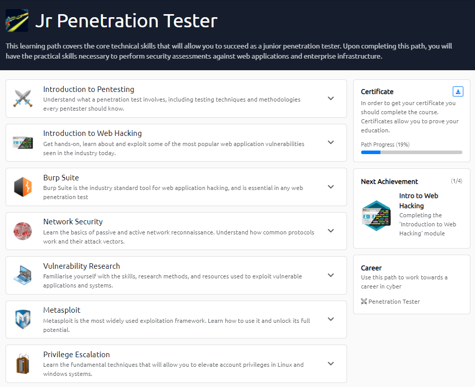
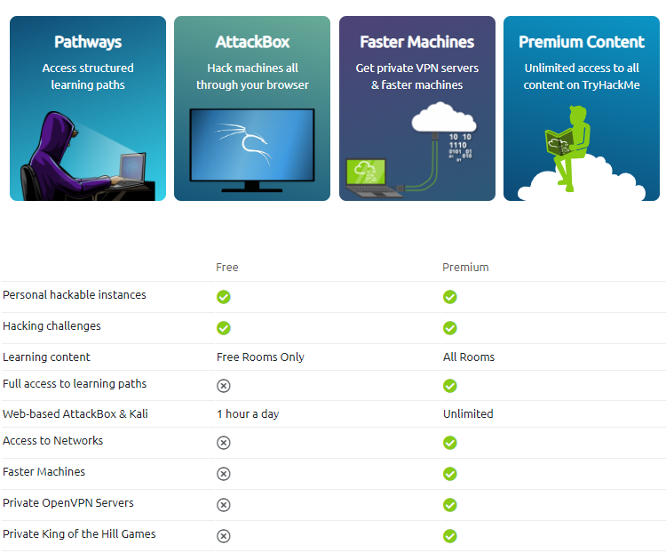

THM: TryHackMe
Here is the URL to TryHackMe: https://tryhackme.com/
Table of contents
What is THM?
TryHackMe is a learning platform based around teaching users' cybersecurity-based content (meaning it doesn’t
solely teach penetration testing content), using things called ‘rooms’ (which are basically modules) for
teaching.
The platform has a mix of learning-based content (which is more textbook learning with some user
interaction) to CTF based rooms which expect users to solve on their own (write-ups are available online
however if the user requires help).
Compared to HTB, it's a much more beginner friendly platform, offering
easier tasks and being more teaching oriented.
Here is an example of what the TryHackMe dashboard looks like:

In each room the content is broken down into sections (creating a sort of checkpoint system), separating the
content and making it easier to digest (and allows users to work on a single room across multiple sessions).
At the end of each checkpoint, a Q and A system will appear. This tests users on the content they have gone
over, sometimes asking users textbook based questions (if X is done, what must be done next?), and other times
ask the users to practice commands, either telling users to enter the command in its correct syntax (and allow
the user to pass if they enter the command correctly), or ask the user to run the command and enter the correct
response from the command.
In addition to the Q and A, users can click on hints to receive advice if they are
struggling.
Below are two examples of the Q&A system, the one on the left comes from a learning-based room ‘What is networking?’ and the right on from the practical room ‘Vulnversity’.
 
In order to motivate users into completing tasks on a daily basis TryHackMe has a ‘streak’ system. Every day
you do a task, you get a point, but miss a day and the streak resets to 0. The streak also offers some nice
benefits, nothing major but better than nothing.

In addition, some rooms require you to run a VM to provide the services for the room. Fortunately,
the VM is setup by TryHackMe, so no user intervention is required (other than clicking the button saying
‘Start Machine’.

Some rooms require the user to use a penetration testing VM to complete the tasks. Previously, you would need
to connect to the TryHackMe network using OpenVPN on your penetration VM.
Now, TryHackMe gives you the option
of using their own ‘AttackBox’ which can be accessed from the website instead of using your own VM. This is
very useful if you are not able to use your own VM for the tasks (doing the task away from your main PC setup etc.).

Finally, TryHackMe also has learning paths and modules that can be found by clicking the ‘learn’ button in the
toolbar. The modules are a group of relevant rooms that are connected to each other, and have been grouped up
(for example the Burp Suite module has all the Burp Suite rooms), and the learning path combines modules into
a larger module. Here is an example of some learning paths and its contents.


Issues with TryHackMe
To Contents Table
One issue with TryHackMe is many of the rooms are locked behind a paywall membership. This means some of
the rooms (for example, the first couple of rooms in a learning path) will be free for you to do. However,
later on you will start to notice some rooms will require a premium membership to access (midway or later
in the learning path) – this can interrupt your experience if you plan to do a learning path/room but then
find out you must stop because it’s a paid feature.
The membership also effects your time limit on the
Attack Box – if you’re a free user, you can only use it 1hr a day, which can be slightly annoying if you
wish to binge TryHackMe tasks (but in my opinion 1hr is more than enough for a single TryHackMe session).
Another issue is I have noticed some free rooms have actually turned into membership only rooms – Eternal
‘blue’ room used to be free (and this room went over the EternalBlue exploit, and even provided a vulnerable
VM to try the exploit against) but this is no longer available to free users.

Overall
To Contents TableTryHackMe is very good for learning content. It’s also pretty good for CTF based content, however I believe HTB is still the best for CTF. Despite having some rooms locked behind a paywall, the learning content is still very decent and worth learning from. On the plus side, TryHackMe is (slightly) cheaper than HTB per month, as well as being an easier starting point.